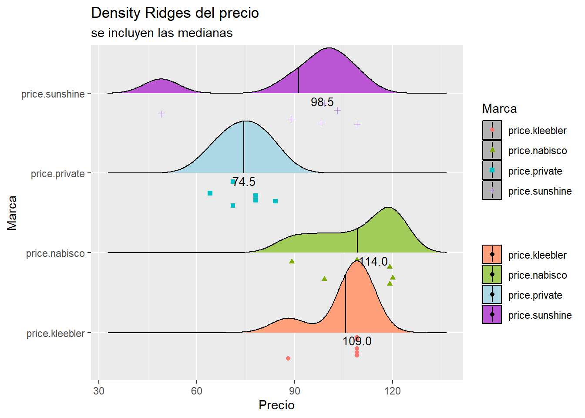

Choice of Brand for Crackers
library(tidyverse)
library(RColorBrewer)
library(ggridges)
#library(modeest)
library(ggstance)
library(Ecdat)
library(rpivotTable)
library(VGAM)
library(mclogit)
library(car)Database
Descripción
En este caso de uso utilizamos la base de datos Cracker del paquete Ecdat sobre la elección de un individuo de una marca de galletas saladas entre cuatro opciones posibles. (Sunshine, Kleebler, Nabisco y Private)
La base de datos contiene 3.292 registros y dentro de cada fila tenemos:
- id: individuals identifiers
- choice: one of sunshine, kleebler, nabisco, private
- disp.z: is there a display for brand z ?
- feat.z: is there a newspaper feature advertisement for brand z ?
- price.z: price of brand z
Code
summary(Cracker) id disp.sunshine disp.kleebler disp.nabisco disp.private feat.sunshine
Min. : 1.00 Min. :0.0000 Min. :0.0000 Min. :0.0000 Min. :0.00000 Min. :0.00000
1st Qu.: 35.00 1st Qu.:0.0000 1st Qu.:0.0000 1st Qu.:0.0000 1st Qu.:0.00000 1st Qu.:0.00000
Median : 67.00 Median :0.0000 Median :0.0000 Median :0.0000 Median :0.00000 Median :0.00000
Mean : 67.49 Mean :0.1288 Mean :0.1063 Mean :0.3402 Mean :0.09872 Mean :0.03767
3rd Qu.: 99.00 3rd Qu.:0.0000 3rd Qu.:0.0000 3rd Qu.:1.0000 3rd Qu.:0.00000 3rd Qu.:0.00000
Max. :136.00 Max. :1.0000 Max. :1.0000 Max. :1.0000 Max. :1.00000 Max. :1.00000
feat.kleebler feat.nabisco feat.private price.sunshine price.kleebler price.nabisco
Min. :0.00000 Min. :0.00000 Min. :0.00000 Min. : 49.0 Min. : 88.0 Min. : 0.0
1st Qu.:0.00000 1st Qu.:0.00000 1st Qu.:0.00000 1st Qu.: 89.0 1st Qu.:105.0 1st Qu.: 99.0
Median :0.00000 Median :0.00000 Median :0.00000 Median : 97.0 Median :109.0 Median :109.0
Mean :0.04253 Mean :0.08657 Mean :0.04708 Mean : 95.7 Mean :112.6 Mean :107.9
3rd Qu.:0.00000 3rd Qu.:0.00000 3rd Qu.:0.00000 3rd Qu.:105.0 3rd Qu.:121.0 3rd Qu.:119.0
Max. :1.00000 Max. :1.00000 Max. :1.00000 Max. :129.0 Max. :139.0 Max. :169.0
price.private choice
Min. : 38.00 sunshine: 239
1st Qu.: 59.00 kleebler: 226
Median : 65.00 nabisco :1792
Mean : 68.07 private :1035
3rd Qu.: 78.00
Max. :115.00 Code
paleta_choice <- c("lightsalmon", "darkolivegreen3", "lightblue", "mediumorchid")Datos por individuo
Se han recogido datos de 136 individuos. Cada individuo tiene de media 21 registros.
Code
Cracker |> select(id) |> table() |> as.data.frame() |> select(Freq) |> summary() Freq
Min. :14.00
1st Qu.:16.75
Median :21.00
Mean :24.21
3rd Qu.:29.00
Max. :77.00 Tomamos de ejemplo algunos de los registros del id 1.
Code
Cracker |> filter(id==1) |> head(5) id disp.sunshine disp.kleebler disp.nabisco disp.private feat.sunshine feat.kleebler feat.nabisco
1 1 0 0 0 0 0 0 0
2 1 0 0 0 0 0 0 0
3 1 1 0 0 0 0 0 0
4 1 0 0 0 0 0 0 0
5 1 0 0 0 0 0 0 0
feat.private price.sunshine price.kleebler price.nabisco price.private choice
1 0 98 88 120 71 nabisco
2 0 99 109 99 71 nabisco
3 0 49 109 109 78 sunshine
4 0 103 109 89 78 nabisco
5 0 109 109 119 64 nabiscoDistribución de las preferencias
Para cada usuario contamos el número de veces que ha elegido cada una de las marcas.
Code
data_0 <-
Cracker |> select(id, choice) |> group_by_all() |> count(,.drop = FALSE) |> ungroup() |> mutate(p = n/sum(n), .by=id) |>
#mutate(scale = scale(p, scale = FALSE), .by=id) |>
arrange(id,-n) |> mutate(preference = row_number(), .by=id)El individuo 1 ha elegido la marca Nabisco en el 87.5 % de las veces.
# A tibble: 8 × 5
id choice n p preference
<dbl> <fct> <int> <dbl> <int>
1 1 nabisco 14 0.875 1
2 1 sunshine 2 0.125 2
3 1 kleebler 0 0 3
4 1 private 0 0 4
5 2 sunshine 10 0.625 1
6 2 nabisco 4 0.25 2
7 2 kleebler 2 0.125 3
8 2 private 0 0 4La distribución de la preferencia de cada marca:
Code
data_0 |> select(choice, preference) |> table() |> addmargins()
round(
data_0 |> select(choice, preference) |> table() |> prop.table(1)*100, 2
) |> addmargins() preference
choice 1 2 3 4 Sum
sunshine 8 60 59 9 136
kleebler 6 18 63 49 136
nabisco 82 30 9 15 136
private 40 28 5 63 136
Sum 136 136 136 136 544 preference
choice 1 2 3 4 Sum
sunshine 5.88 44.12 43.38 6.62 100.00
kleebler 4.41 13.24 46.32 36.03 100.00
nabisco 60.29 22.06 6.62 11.03 100.00
private 29.41 20.59 3.68 46.32 100.00
Sum 99.99 100.01 100.00 100.00 400.00Escala
Creamos una escala teniendo en cuenta las preferencias del individuo e incluyendo el porcentaje de veces que elige cada una de las marcas sobre el total de sus elecciones.
Code
data_1 <-
data_0 |> mutate(scale = scale(p, scale = FALSE), .by=id)Esta escala tiene una relación directa con la proporción de cada una de las elecciones. Se mueve entre los valores -0.25 y 0.75.
- El valor -0.25 si esa marca nunca ha sido elegida por el individuo (p=0).
- El valor 0.75 si es la única marca elegida por el usuario (p=1).
Code
data_1 |> select(choice, p, scale) |> summary() choice p scale.V1
sunshine:136 Min. :0.00000 Min. :-0.2500000
kleebler:136 1st Qu.:0.00000 1st Qu.:-0.2500000
nabisco :136 Median :0.05556 Median :-0.1944444
private :136 Mean :0.25000 Mean : 0.0000000
3rd Qu.:0.43902 3rd Qu.: 0.1890244
Max. :1.00000 Max. : 0.7500000 Si las elecciones fueran fruto del azar, cada marca sería elegida un 25 % por cada individuo. Con la escala creado cuantificamos cuánto se desvía la proporción de cada elección sobre este porcentaje esperado.
Code
data_1 |> filter(id==1)# A tibble: 4 × 6
id choice n p preference scale[,1]
<dbl> <fct> <int> <dbl> <int> <dbl>
1 1 nabisco 14 0.875 1 0.625
2 1 sunshine 2 0.125 2 -0.125
3 1 kleebler 0 0 3 -0.25
4 1 private 0 0 4 -0.25 Los individuos 7 y 123 han hecho un total de 17 elecciones siendo su marca preferida Nabisco.
Code
data_1 |> filter(id %in% c(7,123))# A tibble: 8 × 6
id choice n p preference scale[,1]
<dbl> <fct> <int> <dbl> <int> <dbl>
1 7 nabisco 12 0.706 1 0.456
2 7 kleebler 4 0.235 2 -0.0147
3 7 sunshine 1 0.0588 3 -0.191
4 7 private 0 0 4 -0.25
5 123 nabisco 14 0.824 1 0.574
6 123 sunshine 1 0.0588 2 -0.191
7 123 kleebler 1 0.0588 3 -0.191
8 123 private 1 0.0588 4 -0.191 Análisis exploratorio
Eliminación datos confusos
Existen tres registros donde el precio de la marca Nabisco es cero. Puede deberse a alguna oferta que no tengamos recogida o error en los datos. Eliminamos estos registros
Code
```{r}
Cracker |> filter(price.nabisco==0) |> select(c(contains('nabisco'),'choice'))
Cracker_clean <- Cracker |> filter(price.nabisco>0)
``` disp.nabisco feat.nabisco price.nabisco choice
319 1 0 0 nabisco
321 0 0 0 nabisco
1051 0 0 0 nabiscoDistribución del precio
Code
summary(Cracker_clean |> select(contains('price'))) price.sunshine price.kleebler price.nabisco price.private
Min. : 49.0 Min. : 88.0 Min. : 49 Min. : 38.00
1st Qu.: 89.0 1st Qu.:105.0 1st Qu.: 99 1st Qu.: 59.00
Median : 97.0 Median :109.0 Median :109 Median : 65.00
Mean : 95.7 Mean :112.6 Mean :108 Mean : 68.08
3rd Qu.:105.0 3rd Qu.:121.0 3rd Qu.:119 3rd Qu.: 78.00
Max. :129.0 Max. :139.0 Max. :169 Max. :115.00 Definimos el precio de la marca elegida por el usuario y lo enfrentamos al precio medio de las elecciones que tenía el individuo.
Code
data_2 <- Cracker_clean |> mutate(precio_medio = (price.sunshine + price.kleebler + price.nabisco + price.private) / 4,
precio_preferencia = case_when(choice == "sunshine" ~ price.sunshine,
choice == "kleebler" ~ price.kleebler,
choice == "nabisco" ~ price.nabisco,
choice == "private" ~ price.private),
id=factor(id))
# |>
#select(precio_preferencia, precio_medio, id, choice)La marca Private casi siempre tiene un precio superior al precio medio de las cuatro marcas cuando es la marca que el individuo prefiere. Aquellos casos donde la marca elegida es la marca Nabisco, el precio de esta elección casi siempre es inferior al precio medio de las cuatro marcas.
Code
data_2 |> ggplot() + geom_point(aes(x=precio_preferencia, y=precio_medio, colour = factor(choice))) +
geom_abline(intercept = 0) + xlim(30, 150) + ylim(30, 150) +
xlab("Precio de la marca escogida (choice)") +
ylab("Precio medio de las cuatro marcas")+
scale_color_manual(values = paleta_choice) +
labs(colour="choice")
Tenemos la distribución del precio para cada una de las marcas y marcamos la media del precio de cada una de ellas. Las marcas Sunshine y Klebbe son bimodales.
Code
Cracker_clean |> select(contains("price")) |> head() |> pivot_longer(cols = c(price.sunshine,price.kleebler ,price.nabisco ,price.private), names_to = "Marca", values_to = "Precio") |> ggplot(aes(x = Precio, y = Marca, fill=Marca)) +
geom_density_ridges(quantile_lines=TRUE, quantile_fun=function(Precio,...)mean(Precio),
jittered_points = TRUE, position = "raincloud", scale = 0.9,
aes(point_color = Marca, point_fill = Marca, point_shape = Marca)) +
stat_summaryh(fun.x=median,
geom="text",
aes(label=sprintf("%1.1f", ..x..)),
position=position_nudge(y=-0.1),
colour="black",
size=3.5) +
scale_fill_manual(values = paleta_choice) +
labs(fill="",color="",
title = "Density Ridges del precio",
subtitle = "se incluyen las medianas")
Modelo predictivo
Objetivo
Queremos predecir la preferencia de un individuo entre cuatro posibles marcas de galletas saladas en función de las características de venta de cada una de las marcas.
Enfoque del modelo
La variable respuesta es la variable choice. Una variable nominal con cuatro categorías que identifica la marca preferida de cada individuo.
Tenemos dos variables dicotómicas para cada marca. La variable display indica si la marca tenía un display o no. Y la variable feat indica si había un anuncio en el periódico o no.
También la variable continua price sobre el precio de la marca.
Train y test
Separamos mediante un muestreo estratificado (estrato: usuario) el 10 % de los datos para testear el modelo.
Code
set.seed(1234)
Cracker_clean <- Cracker_clean |> mutate(r=row_number())
test_0 <- Cracker_clean |>
slice_sample(prop = 0.10, by = c(id))
train_0 <- anti_join(Cracker_clean, test_0, by='r') |> select(-r)Modelo respuesta múltiple nominal
Usamos la librería VGAM para un modelo repuesta múltiple nominal.
Previamente debemos elegir una categoría de referencia. El resultado del modelo indicará cómo de probable es la elección de cada una de las tres marcas en relación a la categoría de referencia para cada individuo en función.
Se elige como referencia el nivel “Private”.
Modelo 1
Modelo saturado.
Code
modelo1 <- vglm((choice) ~ disp.sunshine + disp.kleebler + disp.nabisco + disp.private + feat.sunshine +
feat.kleebler + feat.nabisco + feat.private + price.sunshine + price.kleebler + price.nabisco + price.private,
family=multinomial(refLevel='private'),
data = train_0)
summary(modelo1)
##
## Call:
## vglm(formula = (choice) ~ disp.sunshine + disp.kleebler + disp.nabisco +
## disp.private + feat.sunshine + feat.kleebler + feat.nabisco +
## feat.private + price.sunshine + price.kleebler + price.nabisco +
## price.private, family = multinomial(refLevel = "private"),
## data = train_0)
##
## Coefficients:
## Estimate Std. Error z value Pr(>|z|)
## (Intercept):1 -0.371567 1.100520 -0.338 0.73564
## (Intercept):2 2.549861 1.038657 2.455 0.01409 *
## (Intercept):3 2.371634 0.589147 4.026 5.68e-05 ***
## disp.sunshine:1 0.132609 0.229104 0.579 0.56271
## disp.sunshine:2 -0.069164 0.288310 -0.240 0.81041
## disp.sunshine:3 -0.010579 0.150467 -0.070 0.94395
## disp.kleebler:1 -0.393682 0.343247 -1.147 0.25141
## disp.kleebler:2 0.490660 0.245832 1.996 0.04594 *
## disp.kleebler:3 0.352822 0.153248 2.302 0.02132 *
## disp.nabisco:1 0.602452 0.171697 3.509 0.00045 ***
## disp.nabisco:2 -0.237287 0.187923 -1.263 0.20671
## disp.nabisco:3 0.138710 0.091933 1.509 0.13135
## disp.private:1 -0.291666 0.333351 -0.875 0.38160
## disp.private:2 0.547604 0.300788 1.821 0.06867 .
## disp.private:3 0.292045 0.164870 1.771 0.07650 .
## feat.sunshine:1 0.424514 0.320745 1.324 0.18566
## feat.sunshine:2 -0.318405 0.575457 -0.553 0.58005
## feat.sunshine:3 -0.002787 0.263883 -0.011 0.99157
## feat.kleebler:1 1.105727 0.426805 2.591 0.00958 **
## feat.kleebler:2 0.968945 0.343167 2.824 0.00475 **
## feat.kleebler:3 0.814436 0.257045 3.168 0.00153 **
## feat.nabisco:1 0.850133 0.306648 2.772 0.00557 **
## feat.nabisco:2 0.673887 0.362386 1.860 0.06294 .
## feat.nabisco:3 0.835435 0.182237 4.584 4.55e-06 ***
## feat.private:1 0.503238 0.413168 1.218 0.22322
## feat.private:2 -1.117189 0.553613 -2.018 0.04359 *
## feat.private:3 -0.453002 0.236248 -1.917 0.05518 .
## price.sunshine:1 -0.057617 0.007008 -8.222 < 2e-16 ***
## price.sunshine:2 0.001373 0.007364 0.186 0.85211
## price.sunshine:3 -0.005830 0.004097 -1.423 0.15469
## price.kleebler:1 0.015718 0.008700 1.807 0.07082 .
## price.kleebler:2 -0.049030 0.008632 -5.680 1.35e-08 ***
## price.kleebler:3 0.007070 0.004442 1.591 0.11150
## price.nabisco:1 0.008991 0.006987 1.287 0.19816
## price.nabisco:2 -0.000778 0.006570 -0.118 0.90573
## price.nabisco:3 -0.031939 0.003389 -9.424 < 2e-16 ***
## price.private:1 0.015571 0.007137 2.182 0.02913 *
## price.private:2 0.017209 0.006668 2.581 0.00986 **
## price.private:3 0.018100 0.003719 4.866 1.14e-06 ***
## ---
## Signif. codes: 0 '***' 0.001 '**' 0.01 '*' 0.05 '.' 0.1 ' ' 1
##
## Names of linear predictors: log(mu[,1]/mu[,4]), log(mu[,2]/mu[,4]), log(mu[,3]/mu[,4])
##
## Residual deviance: 5982.475 on 9027 degrees of freedom
##
## Log-likelihood: -2991.238 on 9027 degrees of freedom
##
## Number of Fisher scoring iterations: 5
##
## Warning: Hauck-Donner effect detected in the following estimate(s):
## 'price.sunshine:1', 'price.kleebler:2'
##
##
## Reference group is level 4 of the responseModelo 2
Sin las variables disp.sunshine y feat.sunshine, ya que son las únicas variables no significativas para las tres marcas. (“los tres modelos”)
Code
modelo2 <- vglm((choice) ~ disp.kleebler + disp.nabisco + disp.private +
feat.kleebler + feat.nabisco + feat.private + price.sunshine + price.kleebler + price.nabisco + price.private,
family=multinomial(refLevel='private'),
data = train_0)
summary(modelo2)
##
## Call:
## vglm(formula = (choice) ~ disp.kleebler + disp.nabisco + disp.private +
## feat.kleebler + feat.nabisco + feat.private + price.sunshine +
## price.kleebler + price.nabisco + price.private, family = multinomial(refLevel = "private"),
## data = train_0)
##
## Coefficients:
## Estimate Std. Error z value Pr(>|z|)
## (Intercept):1 0.0151529 1.0657969 0.014 0.988656
## (Intercept):2 2.4433041 1.0162492 2.404 0.016206 *
## (Intercept):3 2.3584486 0.5685170 4.148 3.35e-05 ***
## disp.kleebler:1 -0.4109334 0.3456079 -1.189 0.234433
## disp.kleebler:2 0.4986944 0.2448975 2.036 0.041716 *
## disp.kleebler:3 0.3533531 0.1531462 2.307 0.021038 *
## disp.nabisco:1 0.6265560 0.1710428 3.663 0.000249 ***
## disp.nabisco:2 -0.2421768 0.1876353 -1.291 0.196815
## disp.nabisco:3 0.1380648 0.0918016 1.504 0.132595
## disp.private:1 -0.3080303 0.3326407 -0.926 0.354438
## disp.private:2 0.5436649 0.3004812 1.809 0.070402 .
## disp.private:3 0.2920867 0.1647212 1.773 0.076192 .
## feat.kleebler:1 1.1671297 0.4266385 2.736 0.006226 **
## feat.kleebler:2 0.9557485 0.3415322 2.798 0.005135 **
## feat.kleebler:3 0.8146497 0.2565710 3.175 0.001498 **
## feat.nabisco:1 0.8362242 0.3064157 2.729 0.006352 **
## feat.nabisco:2 0.6706660 0.3623797 1.851 0.064209 .
## feat.nabisco:3 0.8358562 0.1822010 4.588 4.48e-06 ***
## feat.private:1 0.4709882 0.4126084 1.141 0.253666
## feat.private:2 -1.1065705 0.5533831 -2.000 0.045538 *
## feat.private:3 -0.4531545 0.2362288 -1.918 0.055075 .
## price.sunshine:1 -0.0632866 0.0057637 -10.980 < 2e-16 ***
## price.sunshine:2 0.0030933 0.0065791 0.470 0.638230
## price.sunshine:3 -0.0057063 0.0035560 -1.605 0.108562
## price.kleebler:1 0.0172282 0.0085896 2.006 0.044888 *
## price.kleebler:2 -0.0494362 0.0086086 -5.743 9.32e-09 ***
## price.kleebler:3 0.0070815 0.0044332 1.597 0.110183
## price.nabisco:1 0.0090329 0.0069624 1.297 0.194499
## price.nabisco:2 -0.0008594 0.0065740 -0.131 0.895997
## price.nabisco:3 -0.0319371 0.0033881 -9.426 < 2e-16 ***
## price.private:1 0.0156465 0.0071157 2.199 0.027887 *
## price.private:2 0.0169181 0.0066223 2.555 0.010628 *
## price.private:3 0.0180773 0.0036959 4.891 1.00e-06 ***
## ---
## Signif. codes: 0 '***' 0.001 '**' 0.01 '*' 0.05 '.' 0.1 ' ' 1
##
## Names of linear predictors: log(mu[,1]/mu[,4]), log(mu[,2]/mu[,4]), log(mu[,3]/mu[,4])
##
## Residual deviance: 5986.242 on 9033 degrees of freedom
##
## Log-likelihood: -2993.121 on 9033 degrees of freedom
##
## Number of Fisher scoring iterations: 5
##
## Warning: Hauck-Donner effect detected in the following estimate(s):
## 'price.sunshine:1', 'price.kleebler:2'
##
##
## Reference group is level 4 of the responseCoeficientes modelo 2
No existen más variables que no sean significativas a la hora de comparar la probabilidad de preferencias de cada una de las tres marcas contra la marca de referencia.
Code
coef(modelo2, matrix = TRUE) log(mu[,1]/mu[,4]) log(mu[,2]/mu[,4]) log(mu[,3]/mu[,4])
(Intercept) 0.015152926 2.4433041462 2.358448597
disp.kleebler -0.410933438 0.4986943571 0.353353124
disp.nabisco 0.626556037 -0.2421768133 0.138064808
disp.private -0.308030320 0.5436648975 0.292086742
feat.kleebler 1.167129719 0.9557485448 0.814649652
feat.nabisco 0.836224200 0.6706659893 0.835856223
feat.private 0.470988159 -1.1065705217 -0.453154538
price.sunshine -0.063286638 0.0030933268 -0.005706344
price.kleebler 0.017228172 -0.0494362244 0.007081537
price.nabisco 0.009032948 -0.0008593535 -0.031937054
price.private 0.015646453 0.0169181035 0.018077284Code
mycol <- c("red","darkgreen","blue")
par(mfrow=c(1,3))
plotvgam(modelo2, se=TRUE, scale=12,
lcol=mycol[1], scol=mycol[1], which.term=1, ylim = c(-1, 1))
Code
plotvgam(modelo2, se=TRUE, scale=12,
lcol=mycol[2], scol=mycol[2], which.term=2, ylim = c(-1, 1))
Code
plotvgam(modelo2, se=TRUE, scale=12,
lcol=mycol[3], scol=mycol[3], which.term=3, ylim = c(-1, 1))
Test modelo 2
La predicción del modelo nos devuelte el valor response o el valor link.
El valor link compara la probabilidad de elección de cada marca en comparación con la marca de referencia. Es decir, para cada nivel de la variable respuesta la predicción nos indica si es menos probable que la marca de referencia (valor menor a 0), igual de probable (valor igual a 0) o más probable (valor mayor a 0).
El valor response nos devuelve la probabilidad de elección de cada marca.
Code
predictvglm(modelo2, newdata = test_0, type = "link") |> head()
predictvglm(modelo2, newdata = test_0, type = "response") |> head() log(mu[,1]/mu[,4]) log(mu[,2]/mu[,4]) log(mu[,3]/mu[,4])
12 -2.5586249 -1.831425 0.9862012
32 -2.2252401 -2.620349 -0.2720557
42 -0.5227571 -1.882065 0.8922528
68 -2.8907497 -2.296808 0.1787439
51 -2.9610127 -1.772618 0.6944356
87 -1.9756270 -2.121116 0.1297697 sunshine kleebler nabisco private
12 0.01975466 0.04087786 0.6841760 0.2551914
32 0.05561607 0.03746334 0.3921547 0.5147659
42 0.14164231 0.03637921 0.5830744 0.2389041
68 0.02361336 0.04276647 0.5084191 0.4252011
51 0.01605544 0.05269086 0.6211024 0.3101513
87 0.05784995 0.05001702 0.4749689 0.4171641En el primer caso, como log(mu[,1]/mu[,4]) es menor a 0, sabemos que la probabilidad de que el usuario escoja la marca sunshine es menor que la probabilidad de escoger la marca private. \(\exp(-2.9901208)\) = 0.0502814
\(\frac{0.01433895}{0.2851743}\) = 0.0502814
Code
pred <-
predictvglm(modelo2, newdata = train_0,
type = "response",
se.fit = FALSE, deriv = 0, dispersion = NULL,
untransform = FALSE)
pred <-
cbind(
pred |> as.data.frame() |> mutate(id=row_number()) |> pivot_longer(names_to = "category", cols = c(sunshine,kleebler,nabisco,private)) |> slice_max(value, n=1, by = (id)),
choice = train_0$choice) |> mutate(category=as.factor(category))La tasa de acierto es muy baja.
Code
caret::confusionMatrix(data=pred$category, reference = pred$choice)Confusion Matrix and Statistics
Reference
Prediction sunshine kleebler nabisco private
sunshine 18 3 10 13
kleebler 0 0 0 0
nabisco 163 161 1418 703
private 29 39 225 240
Overall Statistics
Accuracy : 0.5546
95% CI : (0.5367, 0.5724)
No Information Rate : 0.547
P-Value [Acc > NIR] : 0.2055
Kappa : 0.1103
Mcnemar's Test P-Value : <2e-16
Statistics by Class:
Class: sunshine Class: kleebler Class: nabisco Class: private
Sensitivity 0.085714 0.00000 0.8578 0.25105
Specificity 0.990754 1.00000 0.2498 0.85818
Pos Pred Value 0.409091 NaN 0.5800 0.45028
Neg Pred Value 0.935527 0.93283 0.5927 0.71233
Prevalence 0.069490 0.06717 0.5470 0.31635
Detection Rate 0.005956 0.00000 0.4692 0.07942
Detection Prevalence 0.014560 0.00000 0.8091 0.17637
Balanced Accuracy 0.538234 0.50000 0.5538 0.55461Modelo respuesta múltiple nominal medidas repetidas
Hasta el momento no hemos tenido en cuenta en el modelo predictivo que estamos usando información con medidas repetidas, ya que para cada usuario tenemos más de un evento donde ha elegido entre las cuatro marcas.
El modelo saturado inicial cuenta con una parte aleatoria.
* Pendiente aleatoria. Nos dará información sobre si cada
Modelo 3
Modelo saturado.
Code
modelo3 <- mblogit(relevel(choice, ref = "private") ~ disp.sunshine + disp.kleebler + disp.nabisco + disp.private + feat.sunshine +
feat.kleebler + feat.nabisco + feat.private + price.sunshine + price.kleebler + price.nabisco + price.private,
random = ~ 1 | id,
data = train_0,
control = mmclogit.control(epsilon = 1e-10,
maxit = 50, trace=TRUE, # Intento aumentar número de iteraciones para que converga
trace.inner=FALSE,
avoid.increase = FALSE,
break.on.increase = FALSE,
break.on.infinite = FALSE,
break.on.negative = FALSE))
## Warning: Inner iterations did not coverge - nlminb message: false convergence (8)
##
## Iteration 1 - deviance = 3827.34 - criterion = 0.759349
## Warning: Inner iterations did not coverge - nlminb message: false convergence (8)
##
## Iteration 2 - deviance = 3367.426 - criterion = 0.06472519
## Warning: Inner iterations did not coverge - nlminb message: false convergence (8)
##
## Iteration 3 - deviance = 3219.024 - criterion = 0.02117881
## Warning: Inner iterations did not coverge - nlminb message: false convergence (8)
##
## Iteration 4 - deviance = 3146.159 - criterion = 0.005016585
## Warning: Inner iterations did not coverge - nlminb message: false convergence (8)
##
## Iteration 5 - deviance = 3117.599 - criterion = 0.0007487687
## Warning: Inner iterations did not coverge - nlminb message: false convergence (8)
##
## Iteration 6 - deviance = 3107.389 - criterion = 1.998695e-05
## Warning: Inner iterations did not coverge - nlminb message: false convergence (8)
##
## Iteration 7 - deviance = 3106.231 - criterion = 7.095098e-07
## Warning: Inner iterations did not coverge - nlminb message: false convergence (8)
##
## Iteration 8 - deviance = 3106.079 - criterion = 2.944966e-13
## converged
#summary(modelo3)Code
pred <-
predict(modelo3, test_0, type="response")
pred <-
cbind(
pred |> as.data.frame() |> mutate(id=row_number()) |> pivot_longer(names_to = "category", cols = c(sunshine,kleebler,nabisco,private)) |> slice_max(value, n=1, by = (id)),
choice = test_0$choice) |> mutate(category=as.factor(category))El modelo mblogit usa un proceso iterativo para ajustar los parámetros del modelo. El algoritmo busca minimizar o maximizar una función objetivo (verosimilitud del modelo).
La convergencia se alcanza en el punto donde los cambios en los parámetros de una iteración a la siguiente son lo suficientemente pequeños como para considerar que el proceso ha encontrado una solución óptima.
Podemos tener casos donde el algortimo nos advierte de que no ha encontrado esta convergencia. Posibles causas:
Multicolinealidad. Una alta correlación entre las variables independientes puede hacer que el modelo tenga dificultades para encontrar una solución estable.
Datos desbalanceados. Si los datos están muy desbalanceados puede provocar que el modelo tenga problemas para converger.
Valores atípicos. El ruido en los datos pueden interferir con el proceso de convergencia.
Modelo demasiado complejo. Un modelo demasiado complejo o mal especificado puede dificultar la convergencia.
Escalado de variables. Variables en escalas muy diferentes pueden causar problemas de convergencia.
En este punto tenemos tres posibles formas de resolver el problema:
- Verificar la multicolinealidad. Usar el VIF para verificar si las variables independientes están correlacionadas.
- Escalar las variables. Tenemos variables dicotómicas y variables contínuas de precio.
- Aumenta el número de iteraciones o ajusta la tolerancia. (En realidad hemos bajado el número de iteraciones en el modelo3 para encontrarnos con este problema)
VIF
El VIF está basado en la suposición de un modelo lineal.
Cuando la variable respuesta es categórica, no podemos calcular directamente el VIF. Sin embargo, podemos evaluar la multicolinealidad entre las variables independientes antes de ajustar el modelo usando un modelo lineal auxiliar donde se trata una de las variables independientes como la variable respuesta.
- Ignoramos la variable categórica respuesta. La multicolinealidad es un problema que afecta a las relaciones entre las variables independientes. La variable respuesta categórica no influye en la multicolinealidad entre las predictoras.
- Ajustamos un modelo de regresión lineal donde cada una de las variables independientes es la variable dependiente del modelo lineal.
- Calcular el VIF para cada variable independiente.
Escalado de variables
Escalado:
Code
# Escalado del conjunto de entrenamiento
train_1 <- train_0 |> mutate(price.sunshine = scale(price.sunshine),
price.kleebler = scale(price.kleebler),
price.nabisco = scale(price.nabisco),
price.private = scale(price.private))
summary(train_1) id disp.sunshine disp.kleebler disp.nabisco disp.private feat.sunshine
Min. : 1.00 Min. :0.0000 Min. :0.0000 Min. :0.0000 Min. :0.00000 Min. :0.00000
1st Qu.: 35.00 1st Qu.:0.0000 1st Qu.:0.0000 1st Qu.:0.0000 1st Qu.:0.00000 1st Qu.:0.00000
Median : 67.00 Median :0.0000 Median :0.0000 Median :0.0000 Median :0.00000 Median :0.00000
Mean : 67.46 Mean :0.1281 Mean :0.1056 Mean :0.3388 Mean :0.09696 Mean :0.03805
3rd Qu.: 99.00 3rd Qu.:0.0000 3rd Qu.:0.0000 3rd Qu.:1.0000 3rd Qu.:0.00000 3rd Qu.:0.00000
Max. :136.00 Max. :1.0000 Max. :1.0000 Max. :1.0000 Max. :1.00000 Max. :1.00000
feat.kleebler feat.nabisco feat.private price.sunshine.V1 price.kleebler.V1
Min. :0.00000 Min. :0.00000 Min. :0.00000 Min. :-3.504420 Min. :-2.3197739
1st Qu.:0.00000 1st Qu.:0.00000 1st Qu.:0.00000 1st Qu.:-0.493700 1st Qu.:-0.7184402
Median :0.00000 Median :0.00000 Median :0.00000 Median : 0.108444 Median :-0.3416558
Mean :0.04269 Mean :0.08637 Mean :0.04533 Mean : 0.000000 Mean : 0.0000000
3rd Qu.:0.00000 3rd Qu.:0.00000 3rd Qu.:0.00000 3rd Qu.: 0.710588 3rd Qu.: 0.7886974
Max. :1.00000 Max. :1.00000 Max. :1.00000 Max. : 2.517020 Max. : 2.4842272
price.nabisco.V1 price.private.V1 choice
Min. :-4.187234 Min. :-2.440051 sunshine: 210
1st Qu.:-0.640322 1st Qu.:-0.736038 kleebler: 203
Median : 0.069060 Median :-0.249177 nabisco :1653
Mean : 0.000000 Mean : 0.000000 private : 956
3rd Qu.: 0.778443 3rd Qu.: 0.805689
Max. : 4.325355 Max. : 3.807999 Normalización:
Code
# Normalizado del conjunto de entrenamiento
normalizar <- function(x) {
min_values <- min(x)
max_values <- max(x)
(x - min_values) / (max_values - min_values)
}
train_2 <- train_0 |> mutate(price.sunshine = normalizar(price.sunshine),
price.kleebler = normalizar(price.kleebler),
price.nabisco = normalizar(price.nabisco),
price.private = normalizar(price.private))
summary(train_2) id disp.sunshine disp.kleebler disp.nabisco disp.private feat.sunshine
Min. : 1.00 Min. :0.0000 Min. :0.0000 Min. :0.0000 Min. :0.00000 Min. :0.00000
1st Qu.: 35.00 1st Qu.:0.0000 1st Qu.:0.0000 1st Qu.:0.0000 1st Qu.:0.00000 1st Qu.:0.00000
Median : 67.00 Median :0.0000 Median :0.0000 Median :0.0000 Median :0.00000 Median :0.00000
Mean : 67.46 Mean :0.1281 Mean :0.1056 Mean :0.3388 Mean :0.09696 Mean :0.03805
3rd Qu.: 99.00 3rd Qu.:0.0000 3rd Qu.:0.0000 3rd Qu.:1.0000 3rd Qu.:0.00000 3rd Qu.:0.00000
Max. :136.00 Max. :1.0000 Max. :1.0000 Max. :1.0000 Max. :1.00000 Max. :1.00000
feat.kleebler feat.nabisco feat.private price.sunshine price.kleebler price.nabisco
Min. :0.00000 Min. :0.00000 Min. :0.00000 Min. :0.000 Min. :0.0000 Min. :0.0000
1st Qu.:0.00000 1st Qu.:0.00000 1st Qu.:0.00000 1st Qu.:0.500 1st Qu.:0.3333 1st Qu.:0.4167
Median :0.00000 Median :0.00000 Median :0.00000 Median :0.600 Median :0.4118 Median :0.5000
Mean :0.04269 Mean :0.08637 Mean :0.04533 Mean :0.582 Mean :0.4829 Mean :0.4919
3rd Qu.:0.00000 3rd Qu.:0.00000 3rd Qu.:0.00000 3rd Qu.:0.700 3rd Qu.:0.6471 3rd Qu.:0.5833
Max. :1.00000 Max. :1.00000 Max. :1.00000 Max. :1.000 Max. :1.0000 Max. :1.0000
price.private choice
Min. :0.0000 sunshine: 210
1st Qu.:0.2727 kleebler: 203
Median :0.3506 nabisco :1653
Mean :0.3905 private : 956
3rd Qu.:0.5195
Max. :1.0000 Code
modelo3_escalado <- mblogit(relevel(choice, ref = "private") ~ disp.sunshine + disp.kleebler + disp.nabisco + disp.private + feat.sunshine +
feat.kleebler + feat.nabisco + feat.private + price.sunshine + price.kleebler + price.nabisco + price.private,
random = ~ 1 | id,
data = train_2,
control = mmclogit.control(epsilon = 1e-10,
maxit = 50, trace=TRUE, # Intento aumentar número de iteraciones para que converga
trace.inner=FALSE,
avoid.increase = FALSE,
break.on.increase = FALSE,
break.on.infinite = FALSE,
break.on.negative = FALSE))
## Warning: Inner iterations did not coverge - nlminb message: false convergence (8)
##
## Iteration 1 - deviance = 3827.34 - criterion = 0.759349
## Warning: Inner iterations did not coverge - nlminb message: false convergence (8)
##
## Iteration 2 - deviance = 3367.426 - criterion = 0.06472519
## Warning: Inner iterations did not coverge - nlminb message: false convergence (8)
##
## Iteration 3 - deviance = 3219.024 - criterion = 0.02117881
## Warning: Inner iterations did not coverge - nlminb message: false convergence (8)
##
## Iteration 4 - deviance = 3146.159 - criterion = 0.005016585
## Warning: Inner iterations did not coverge - nlminb message: false convergence (8)
##
## Iteration 5 - deviance = 3117.599 - criterion = 0.0007487687
## Warning: Inner iterations did not coverge - nlminb message: false convergence (8)
##
## Iteration 6 - deviance = 3107.389 - criterion = 1.998695e-05
## Warning: Inner iterations did not coverge - nlminb message: false convergence (8)
##
## Iteration 7 - deviance = 3106.231 - criterion = 7.095098e-07
## Warning: Inner iterations did not coverge - nlminb message: false convergence (8)
##
## Iteration 8 - deviance = 3106.079 - criterion = 2.944971e-13
## converged
#summary(modelo3)Test modelo3
En este caso los resultados del modelo3 y el modelo3_escalado son los mismos y solo cambia el valor de los parámetros.
Code
test_2 <- test_0 |> mutate(price.sunshine = normalizar(price.sunshine),
price.kleebler = normalizar(price.kleebler),
price.nabisco = normalizar(price.nabisco),
price.private = normalizar(price.private))Code
pred <-
predict(modelo3, train_0, type="response")
pred <-
cbind(
pred |> as.data.frame() |> mutate(id=row_number()) |> pivot_longer(names_to = "category", cols = c(sunshine,kleebler,nabisco,private)) |> slice_max(value, n=1, by = (id)),
choice = train_0$choice) |> mutate(category=as.factor(category))
pred_escalado <-
predict(modelo3_escalado, train_2, type="response")
pred_escalado <-
cbind(
pred_escalado |> as.data.frame() |> mutate(id=row_number()) |> pivot_longer(names_to = "category", cols = c(sunshine,kleebler,nabisco,private)) |> slice_max(value, n=1, by = (id)),
choice = train_0$choice) |> mutate(category=as.factor(category))Code
data.frame(Coefficientes = names(modelo3$coefficients), modelo3 = modelo3$coefficients, modelo3_escalado = modelo3_escalado$coefficients, row.names = NULL) |> head() Coefficientes modelo3 modelo3_escalado
1 sunshine~(Intercept) 1.4352279 -0.1145515
2 kleebler~(Intercept) 2.6167388 -1.1259952
3 nabisco~(Intercept) 3.3104297 3.4406663
4 sunshine~disp.sunshine 0.7322586 0.7322586
5 kleebler~disp.sunshine 0.4168021 0.4168021
6 nabisco~disp.sunshine -0.1038300 -0.1038300Code
caret::confusionMatrix(data=pred$category, reference = pred$choice)Warning in confusionMatrix.default(data = pred$category, reference = pred$choice): Levels are not in the same
order for reference and data. Refactoring data to match.Confusion Matrix and Statistics
Reference
Prediction sunshine kleebler nabisco private
sunshine 111 7 22 15
kleebler 6 117 14 4
nabisco 59 52 1531 78
private 34 27 86 859
Overall Statistics
Accuracy : 0.8663
95% CI : (0.8537, 0.8783)
No Information Rate : 0.547
P-Value [Acc > NIR] : < 2.2e-16
Kappa : 0.7682
Mcnemar's Test P-Value : 8.025e-12
Statistics by Class:
Class: sunshine Class: kleebler Class: nabisco Class: private
Sensitivity 0.52857 0.57635 0.9262 0.8985
Specificity 0.98435 0.99149 0.8619 0.9288
Pos Pred Value 0.71613 0.82979 0.8901 0.8539
Neg Pred Value 0.96547 0.97015 0.9063 0.9519
Prevalence 0.06949 0.06717 0.5470 0.3163
Detection Rate 0.03673 0.03872 0.5066 0.2842
Detection Prevalence 0.05129 0.04666 0.5692 0.3329
Balanced Accuracy 0.75646 0.78392 0.8941 0.9137Code
caret::confusionMatrix(data=pred_escalado$category, reference = pred_escalado$choice)Warning in confusionMatrix.default(data = pred_escalado$category, reference = pred_escalado$choice): Levels
are not in the same order for reference and data. Refactoring data to match.Confusion Matrix and Statistics
Reference
Prediction sunshine kleebler nabisco private
sunshine 111 7 22 15
kleebler 6 117 14 4
nabisco 59 52 1531 78
private 34 27 86 859
Overall Statistics
Accuracy : 0.8663
95% CI : (0.8537, 0.8783)
No Information Rate : 0.547
P-Value [Acc > NIR] : < 2.2e-16
Kappa : 0.7682
Mcnemar's Test P-Value : 8.025e-12
Statistics by Class:
Class: sunshine Class: kleebler Class: nabisco Class: private
Sensitivity 0.52857 0.57635 0.9262 0.8985
Specificity 0.98435 0.99149 0.8619 0.9288
Pos Pred Value 0.71613 0.82979 0.8901 0.8539
Neg Pred Value 0.96547 0.97015 0.9063 0.9519
Prevalence 0.06949 0.06717 0.5470 0.3163
Detection Rate 0.03673 0.03872 0.5066 0.2842
Detection Prevalence 0.05129 0.04666 0.5692 0.3329
Balanced Accuracy 0.75646 0.78392 0.8941 0.9137Modelo final
Modelo 4
Eliminamos los siguientes parámetros en orden. El criterio de eliminación es no incluir parámetros no significativos para ninguno de los tres modelos. Tras eliminar un parámetro se vuelve a evaluar el modelo.
- intercepto
- disp.nabisco
- disp.private
- disp.kleebler
- feat.nabisco
Code
modelo4 <- mblogit(relevel(choice, ref = "private") ~ disp.sunshine + feat.sunshine +
feat.kleebler + feat.private + price.sunshine + price.kleebler + price.nabisco + price.private -1,
random = ~ 1 | id,
data = train_0,
control = mmclogit.control(epsilon = 1e-08,
maxit = 100, trace=FALSE, # Intento aumentar número de iteraciones para que converga
trace.inner=FALSE,
avoid.increase = FALSE,
break.on.increase = FALSE,
break.on.infinite = FALSE,
break.on.negative = FALSE))
## Warning: Inner iterations did not coverge - nlminb message: false convergence (8)
## Warning: Inner iterations did not coverge - nlminb message: false convergence (8)
## Warning: Inner iterations did not coverge - nlminb message: false convergence (8)
## Warning: Inner iterations did not coverge - nlminb message: false convergence (8)
## Warning: Inner iterations did not coverge - nlminb message: false convergence (8)
## Warning: Inner iterations did not coverge - nlminb message: false convergence (8)
## Warning: Inner iterations did not coverge - nlminb message: false convergence (8)
## Warning: Inner iterations did not coverge - nlminb message: false convergence (8)Code
summary(modelo4)
Call:
mblogit(formula = relevel(choice, ref = "private") ~ disp.sunshine +
feat.sunshine + feat.kleebler + feat.private + price.sunshine +
price.kleebler + price.nabisco + price.private - 1, data = train_0,
random = ~1 | id, control = mmclogit.control(epsilon = 1e-08,
maxit = 100, trace = FALSE, trace.inner = FALSE, avoid.increase = FALSE,
break.on.increase = FALSE, break.on.infinite = FALSE,
break.on.negative = FALSE))
Equation for sunshine vs private:
Estimate Std. Error z value Pr(>|z|)
disp.sunshine 0.808576 0.307146 2.633 0.00847 **
feat.sunshine 1.356174 0.452279 2.999 0.00271 **
feat.kleebler 0.346333 0.509514 0.680 0.49667
feat.private -0.320644 0.453303 -0.707 0.47935
price.sunshine -0.046123 0.008409 -5.485 4.13e-08 ***
price.kleebler 0.012609 0.009127 1.382 0.16711
price.nabisco 0.004165 0.008274 0.503 0.61472
price.private 0.013678 0.009670 1.414 0.15724
Equation for kleebler vs private:
Estimate Std. Error z value Pr(>|z|)
disp.sunshine 0.545565 0.392360 1.390 0.16439
feat.sunshine 0.626896 0.728686 0.860 0.38962
feat.kleebler 1.198798 0.433066 2.768 0.00564 **
feat.private -1.512692 0.620812 -2.437 0.01482 *
price.sunshine 0.013124 0.009834 1.334 0.18205
price.kleebler -0.042290 0.009661 -4.377 1.2e-05 ***
price.nabisco 0.013096 0.008945 1.464 0.14320
price.private 0.007691 0.010309 0.746 0.45566
Equation for nabisco vs private:
Estimate Std. Error z value Pr(>|z|)
disp.sunshine 0.055114 0.279250 0.197 0.84354
feat.sunshine 0.519501 0.486935 1.067 0.28603
feat.kleebler 0.484959 0.409317 1.185 0.23610
feat.private -0.987750 0.339204 -2.912 0.00359 **
price.sunshine 0.004824 0.006779 0.712 0.47673
price.kleebler 0.038591 0.006689 5.769 7.96e-09 ***
price.nabisco -0.045723 0.005863 -7.799 6.23e-15 ***
price.private 0.020687 0.007095 2.916 0.00355 **
---
Signif. codes: 0 '***' 0.001 '**' 0.01 '*' 0.05 '.' 0.1 ' ' 1
(Co-)Variances:
Grouping level: id
Estimate Std.Err.
sunshine~1 4.215 2.548
kleebler~1 3.760 6.089 1.367 3.298
nabisco~1 3.896 5.782 10.961 4.319 3.233 8.270
Approximate residual deviance: 3142
Number of Fisher scoring iterations: 8
Number of observations
Groups by id: 136
Individual observations: 3022Test
Code
pred <-
predict(modelo4, train_0, type="response")
pred <-
cbind(
pred |> as.data.frame() |> mutate(id=row_number()) |> pivot_longer(names_to = "category", cols = c(sunshine,kleebler,nabisco,private)) |> slice_max(value, n=1, by = (id)),
choice = train_0$choice) |> mutate(category=as.factor(category))Code
caret::confusionMatrix(data=pred$category, reference = pred$choice)Confusion Matrix and Statistics
Reference
Prediction sunshine kleebler nabisco private
sunshine 112 10 26 11
kleebler 5 113 14 3
nabisco 57 51 1525 86
private 36 29 88 856
Overall Statistics
Accuracy : 0.8623
95% CI : (0.8495, 0.8744)
No Information Rate : 0.547
P-Value [Acc > NIR] : < 2.2e-16
Kappa : 0.7613
Mcnemar's Test P-Value : 7.368e-13
Statistics by Class:
Class: sunshine Class: kleebler Class: nabisco Class: private
Sensitivity 0.53333 0.55665 0.9226 0.8954
Specificity 0.98329 0.99220 0.8583 0.9259
Pos Pred Value 0.70440 0.83704 0.8871 0.8484
Neg Pred Value 0.96577 0.96883 0.9018 0.9503
Prevalence 0.06949 0.06717 0.5470 0.3163
Detection Rate 0.03706 0.03739 0.5046 0.2833
Detection Prevalence 0.05261 0.04467 0.5688 0.3339
Balanced Accuracy 0.75831 0.77442 0.8904 0.9107Code
predict(modelo4, newdata = test_0, type = "link") |> head()
predict(modelo4, newdata = test_0, type = "response") |> head() sunshine kleebler nabisco
[1,] 0.2067485 -0.7715249 4.7925842
[2,] 1.6821171 0.4631781 0.9110492
[3,] -1.9737616 -3.7712491 0.9287132
[4,] -5.1317332 -5.5248663 -4.0384621
[5,] -5.1443102 -5.3888061 -3.6987807
[6,] -0.4172986 2.2745910 1.6602874 private sunshine kleebler nabisco
[1,] 0.008109995 0.009972645 0.003749312 0.97816805
[2,] 0.095666551 0.514392102 0.152025276 0.23791607
[3,] 0.270767436 0.037618602 0.006233957 0.68538001
[4,] 0.973219650 0.005748141 0.003879644 0.01715256
[5,] 0.966040200 0.005634426 0.004412314 0.02391306
[6,] 0.060083199 0.039584262 0.584245484 0.31608706\(\exp(0.2067485)\) = 1.2296733
\(\frac{0.009972645}{0.008109995}\) = 1.2296734
Comparación de modelos
Bibliografía
https://www.jstor.org/stable/1392088
https://www.jstatsoft.org/article/view/v032i10